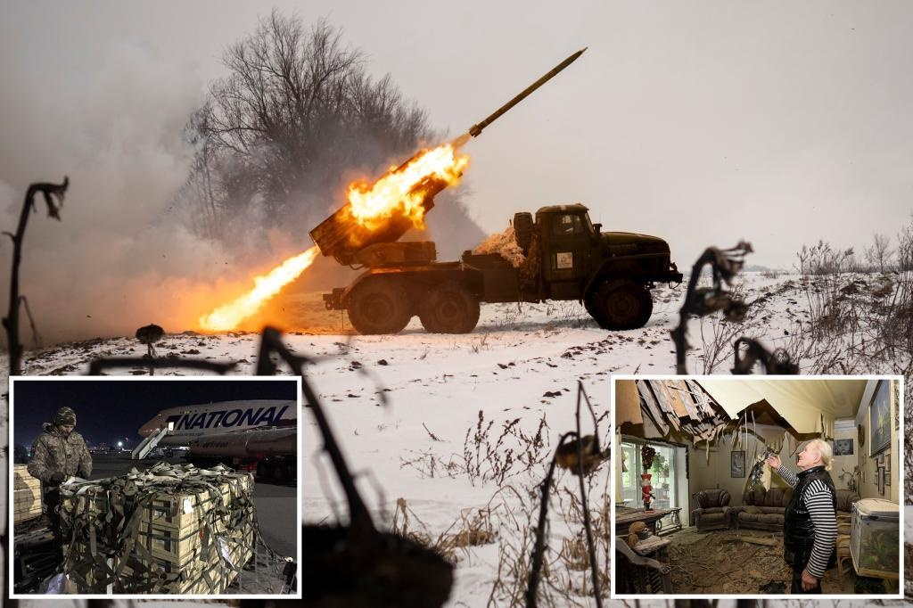

US to send Ukraine new $1.2 billion military aid packageWASHINGTON – The US will dispatch an additional $1.2 billion in military aid to Ukraine as Kyiv prepares its long-anticipated counter-offensive against Russia, the State Department announced Tuesday. The package, which will not come from US stocks but be purchased with congressionally approved funds, will include additional air defense systems and munitions; ammunition for counter-drone systems; 155mm artillery rounds; satellite imagery services; and “support for training, maintenance, and sustainment activities,” the department said. The aid is designed “to bolster its air defenses and sustain [Ukraine’s] artillery ammunition needs,” according to an agency statement, which added that the material is also meant to support “building the capacity of Ukraine’s Armed Forces to defend its territory and deter Russian aggression over the long term.” The package will also include “equipment to integrate Western air defense launchers, missiles and radars with Ukraine’s air defense systems,” which is particularly important as Kyiv’s troops work with both donated weaponry and their existing systems. That package included additional HIMARS rockets; an undisclosed amount of 155mm howitzers and accompanying artillery; mortar rounds; tube-launched TOW missiles; small arms and associated ammunition; and AT-4 and Carl Gustaf shoulder-launched anti-armor weapons systems, and Hydra-70 aircraft rockets, according to the Pentagon. “The United States will continue to work with its Allies and partners to provide Ukraine with capabilities to meet its immediate battlefield needs and longer-term security assistance requirements,” the State Department said Tuesday. The US will dispatch an additional $1.2 billion in military aid to Ukraine. REUTERS Airmen use a forklift to move 155 mm shells bound for Ukraine at Dover Air Force Base. AP Military aid, delivered as part of the United States' security assistance to Ukraine, is unloaded from a plane at the Boryspil International Airport outside Kyiv, Ukraine, February 11, 2022. REUTERS The Ukrainian military fires a multiple rocket launcher at Russian positions in the Kharkiv area on Feb. 25. AP An explosion erupts from an apartment building after a Russian tank fired on it in Mariupol, Ukraine, on March 11, 2022. AP A local resident stands in a destroyed flat after a Russian missile strike in Dnipro on May 9. REUTERS Local residents survey the damage after an apartment building was hit by a Russian missile strike in Dnipro on May 9. REUTERS |
 |